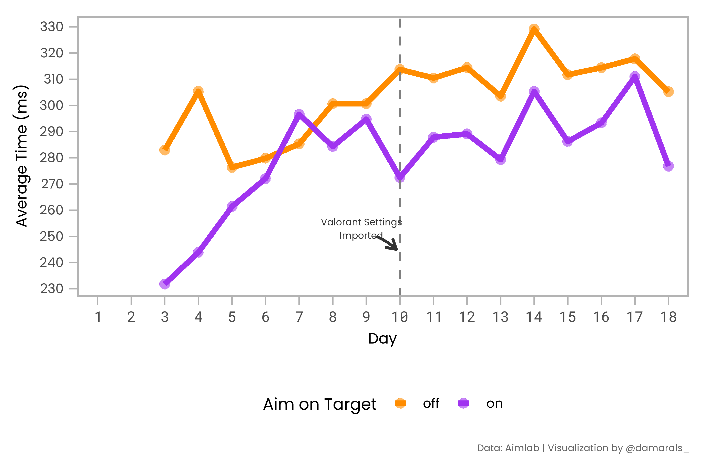
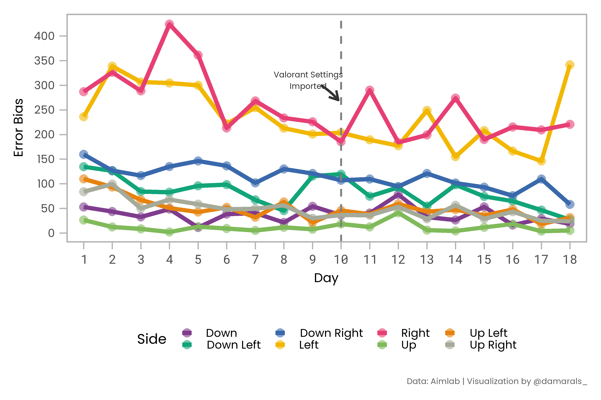
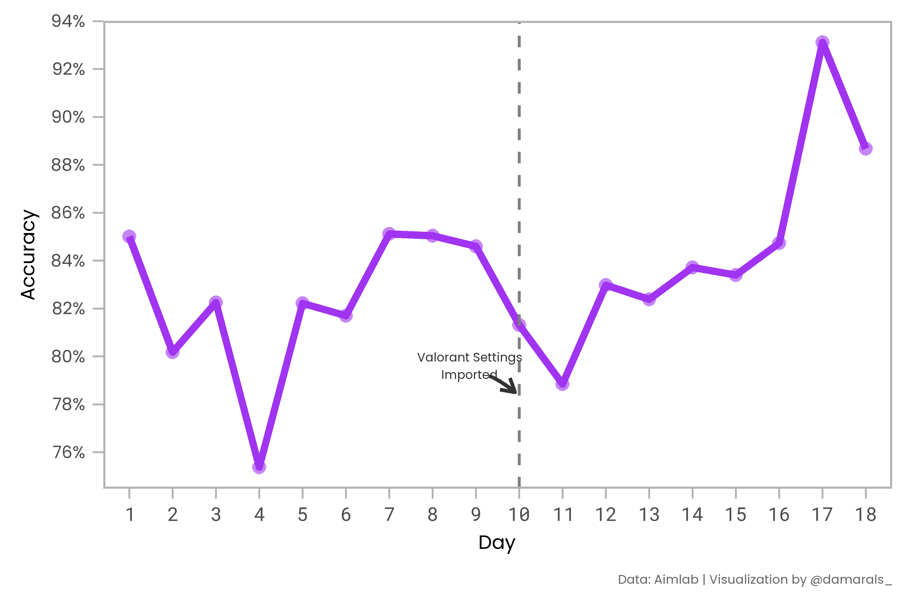

![]()
Code
library(magrittr)
read_csv_quiet <- purrr::quietly(readr::read_csv)R is free software and comes with ABSOLUTELY NO WARRANTY. You are welcome to redistribute it under certain conditions. Type ‘license()’ or ‘licence()’ for distribution details.
May 12, 2022
aimlab_tasks <- c("StrafetrackPrecision", "MotiontrackUltimate",
"MicroshotPrecision", "MotionshotPrecision",
"SpidershotSpeed", "SixshotUltimate")
start_training <- lubridate::mdy("05/10/2022")
da_aimlab <- purrr::map(aimlab_tasks, function(aim_task) {
read_csv_quiet(glue::glue("data/{aim_task}.csv")) %>%
purrr::pluck("result") %>%
janitor::clean_names() %>%
dplyr::mutate(create_date = lubridate::mdy_hms(create_date),
create_date_group = lubridate::as_date(create_date)) %>%
dplyr::filter(create_date > start_training) %>%
dplyr::group_by(create_date_group) %>%
dplyr::top_n(5, create_date) %>%
dplyr::ungroup() %>%
dplyr::select(-weapon_name, -map, -version, -mode) %>%
dplyr::mutate(day = dplyr::dense_rank(create_date_group),
day = factor(day),
create_date_group = factor(create_date_group))
})An orb strafes back and forth at random testing your ability to track movement and keep your crosshair on the target
Shoot the center orb to spawn a new moving orb in a random location. Flick to the target quickly, and transition into a smooth tracking motion until the orb is destroyed.
da_aimlab %>%
purrr::pluck(2) %>%
tidyr::pivot_longer(miss_up:miss_down_right,
names_to = "side", values_to = "error") %>%
dplyr::mutate(side = stringr::str_extract(side, r"{(?<=miss_).+}"),
side = stringr::str_replace(side, "_", " "),
side = stringr::str_to_title(side)) %>%
ggplot2::ggplot() +
ggplot2::aes(x = day, y = error, color = side, group = side) +
ggplot2::stat_summary(fun = mean, geom = "point", size = 9, alpha = 0.6) +
ggplot2::stat_summary(fun = mean, geom = "line", size = 4) +
ggplot2::scale_y_continuous(breaks = scales::pretty_breaks(8)) +
ggplot2::labs(caption = "Data: Aimlab | Visualization by @damarals_") +
danlib::dan_theme(base_size = 60, axis_title_size = 55,
axis_text_x_size = 54, caption_plot_size = 35)
This is the ultimate test of both speed and precision. Shoot the center orb to spawn another orb in a random location, but be quick, the newly spawned orb only stays up for a short duration and you lose points for every missed orb.
Practice the speed of your aim in all directions. Shoot the center orb to spawn another orb in a random location, but be quick, the newly spawned orb only stays up for a short duration and you lose points for every missed orb.
This is the ultimate test of both speed and precision. Shoot the center orb to spawn another orb in a random location, but be quick, the newly spawned orb only stays up for a short duration and you lose points for every missed orb.
Six targets spawn randomly on the screen. Kill one and another spawns so there are always six targets on screen. This task is meant to improve your flicking to targets.
da_aimlab %>%
purrr::pluck(6) %>%
dplyr::mutate(accuracy = kill_total/shots_total) %>%
ggplot2::ggplot() +
ggplot2::aes(x = day, y = accuracy, group = 1) +
ggplot2::stat_summary(fun = mean, geom = "point", size = 9, alpha = 0.6) +
ggplot2::stat_summary(fun = mean, geom = "line", size = 4) +
ggplot2::scale_y_continuous(labels = scales::percent_format(accuracy = 1),
breaks = scales::pretty_breaks(8)) +
ggplot2::labs(caption = "Data: Aimlab | Visualization by @damarals_") +
danlib::dan_theme(base_size = 60, axis_title_size = 55,
axis_text_x_size = 54, caption_plot_size = 35)
da_aimlab %>%
purrr::pluck(6) %>%
ggplot2::ggplot() +
ggplot2::aes(x = day, y = kills_per_sec, group = 1) +
ggplot2::stat_summary(fun = mean, geom = "point", size = 9, alpha = 0.6) +
ggplot2::stat_summary(fun = mean, geom = "line", size = 4) +
ggplot2::scale_y_continuous(breaks = scales::pretty_breaks(8)) +
ggplot2::labs(y = "kills per second",
caption = "Data: Aimlab | Visualization by @damarals_") +
danlib::dan_theme(base_size = 60, axis_title_size = 55,
axis_text_x_size = 54, caption_plot_size = 35)
@online{amaral2022,
author = {Daniel Amaral},
title = {Aimlab Is Worth?},
date = {2022-05-12},
url = {https://github.com/damarals/blog/posts\2022-05-13_aimlab-is-worth},
langid = {en}
}